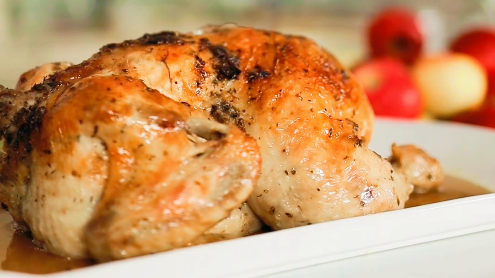

Sunday Roast Chicken
- 1 hr 45 min
- 4 servings
- Dinner
The bag keeps the steam in, so the meat stays juicy. Cut it open for the last 15 minutes and the skin turns golden.
Ingredients
- whole chicken1, about 1.6 kg
- soft butter40 g
- garlic, crushed4 cloves
- thyme4 sprigs
- lemon, halved1
- apple, quartered1
- salt and pepper
- roasting bag1
Directions
- Heat the oven to 200°C / 400°F. Mix the butter with the garlic, thyme leaves, salt and pepper and rub it all over the chicken. Put the lemon and apple inside, then tie the chicken in a roasting bag and set it in a roasting dish.
- Roast for 1 hour 15 minutes.
- Cut the bag open and roast for 15 minutes more, until the skin is golden. Rest for 10 minutes before carving.
Keep this recipe on your phone
Paste the link to this page into Import in TasteKeep, or tap Share on this page and choose TasteKeep. The recipe lands in your book with the photo, ingredients and steps, and cooking mode runs the timer on each step for you.
TasteKeep for iPhone and iPad. Free on the App Store. No account, no subscription.
Photo: a frame from the Pexels series by maksgelatin used in our video.